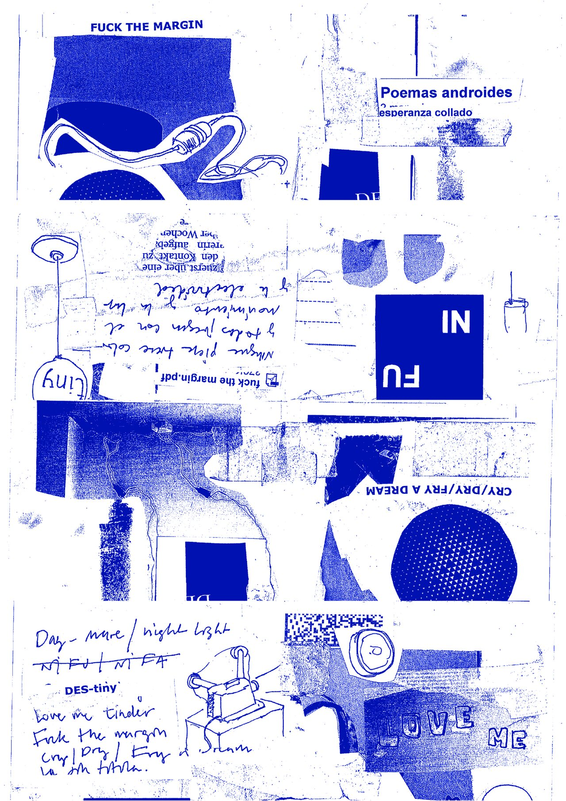
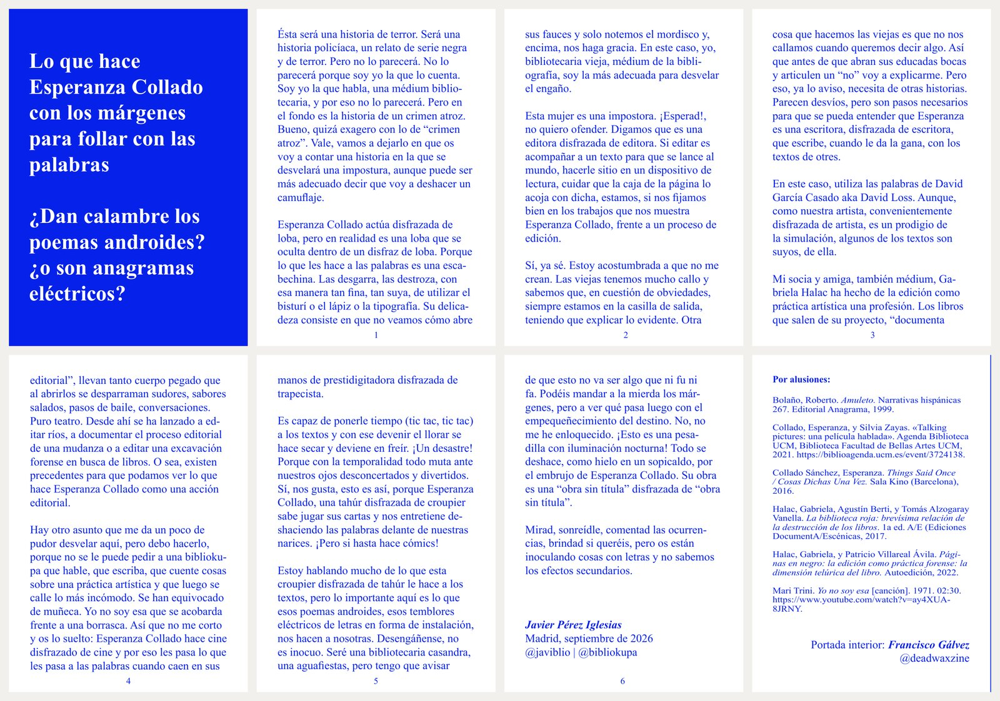

2026
Fanzine
One A4 sheet printed on both sides and folded into an eight-page booklet; unfolded, the reverse becomes a poster
Text: Javier Pérez Iglesias, Lo que hace Esperanza Collado con los márgenes para follar con las palabras. ¿Dan calambre los poemas androides? ¿O son anagramas eléctricos?
Inner cover: Francisco Gálvez
Published for the exhibition Poemas androides, Nadie Nunca Nada No, Madrid (October 2026).